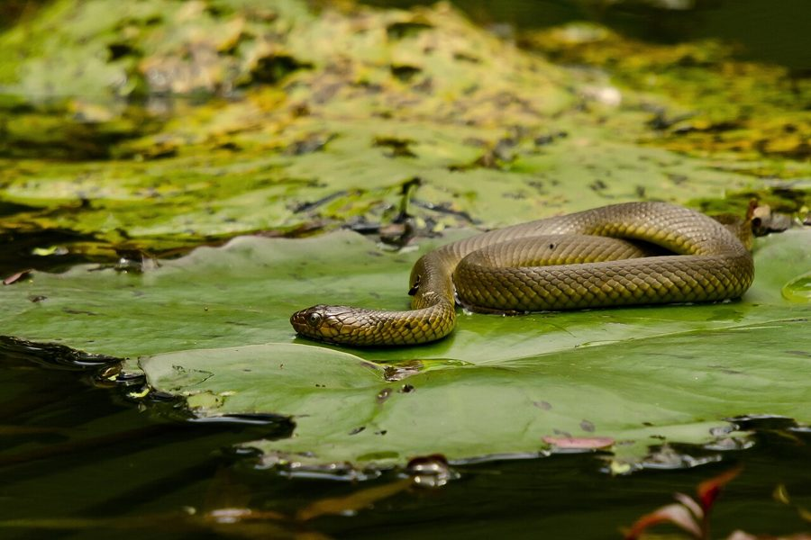

रेनबो वॉटर स्नेकRainbow Water Snake
Enhydris enhydris · Colubridae · REP-0036

- Scientific name वैज्ञानिक नाम
- Enhydris enhydris (Linnaeus, 1758)
- Family कुल
- Colubridae
- Hindi हिंदी
- रेनबो वॉटर स्नेक
- Local names स्थानीय नाम
- rainbow water snake, snake
- Status here यहाँ की स्थिति
- native
- Movement आवागमन
- Resident, here all year
- Known from कहाँ दर्ज
- Others have published records from the Basti–Ayodhya districts बस्ती–अयोध्या के ज़िलों से दूसरों के प्रकाशित अभिलेख
- IUCN IUCN
- LC
- Review समीक्षा
- audited and independently read
When to look कब देखें
Present all year. साल भर मौजूद।
Tell it apart from इनसे अलग पहचानें
रेनबो वॉटर स्नेक / Rainbow Water Snake
Enhydris enhydris (Linnaeus, 1758) — Colubridae
रेनबो वॉटर स्नेक — नहरों, तालाबों और धान के खेतों में रहने वाला एक छोटा, पूरी तरह जलीय और विषरहित सांप। इसका सबसे विशेष लक्षण इसका शानदार रंग है — पीठ गहरे जैतून या काले रंग की और पेट चमकीले पीले या नारंगी रंग का होता है, कभी-कभी लाल धब्बों के साथ, जिससे इसे "इंद्रधनुष" नाम दिया गया है। पूर्वी उत्तर प्रदेश के जलीय क्षेत्रों में यह आम है और मानसून के दौरान सबसे सक्रिय होता है। छोटी मछलियों, केंचुओं और जलीय कीड़ों का शिकार करता है।
Quick Identification त्वरित पहचान
| Feature | Description |
|---|---|
| Form | Small, slender; body moderately compressed; head flattened |
| Dorsal colour | Dark olive, brown, or blackish above |
| Ventral colour | Bright yellow or orange with red spots or blotches |
| Scales | Smooth or weakly keeled; gives a somewhat smooth appearance |
| Head | Small, flattened; eyes and nostrils positioned dorsally |
| Tail | Moderately compressed laterally; occupies 20–25% of total length |
| Behaviour | Semi-aquatic; active in shallow water; shy and retiring |
Field tip: A small water snake with a drab olive-brown back and brilliantly coloured yellow or orange-red belly. Found in shallow water bodies and rice paddies during the monsoon. The bright underside is distinctive. It is completely harmless.
Morphology आकारिकी
Biometrics (typical measurements for specimens from wetlands of eastern UP):
| Measurement | Range |
|---|---|
| Total length | 40–80 cm |
| Tail length | 8–18 cm |
| Weight | 60–150 g |
Dorsal coloration: Uniform dark olive-brown, olive-green, or nearly black above. Head often darker than body. No prominent markings on the back except occasionally faint longitudinal lines in some individuals.
Ventral coloration: The most distinctive feature — bright yellow, orange, or orange-red below, usually with red or orange spots and blotches, particularly on the tail. The contrast between dark back and bright belly is striking.
Scales: Dorsal scales are smooth or weakly keeled, arranged in 15–17 rows at midbody. The anal scale is divided. The relatively smooth scales give the snake a somewhat sleeker appearance than keeled water snakes.
Dentition: Rear-fanged: enlarged grooved teeth at the back of the upper jaw deliver a mild venom used on fish and frogs. Like other homalopsid water snakes it is mildly venomous and not considered dangerous to people; do not handle it.
Behaviour & Ecology व्यवहार और पारिस्थितिकी
Semi-aquatic shallow-water specialist. Enhydris enhydris inhabits the margins and shallow water of wetlands, particularly flooded agricultural areas.
- Habitat preference: Prefers shallow, vegetation-rich water bodies, rice paddies, and shallow drainage systems. Tolerates brackish conditions in mangrove areas.
- Activity period: Active throughout the year but most visible during monsoon and post-monsoon months when water levels are high. Crepuscular and nocturnal.
- Hunting behaviour: Actively searches shallow water and margins for small prey. Sometimes hunts from a stationary position.
- Defensive behaviour: Shy and retreating; rarely aggressive. When threatened, attempts to slip away into water or dense vegetation. Releases musk when handling is unavoidable.
- Social behaviour: Often found in aggregations in suitable habitat, particularly during breeding season.
Life Cycle / Phenology जीवन चक्र
| Season | Event |
|---|---|
| May–June | Pre-breeding season; snakes congregate in shallow water |
| June–September | Breeding season; live-bearing species (viviparous) |
| August–October | Females deliver live young in shallow water refuges |
| Year-round | Feeding and growth; dormancy in cold dry season |
Host Plants or Prey आहार
Small aquatic carnivore:
- Primary prey: Small fish (loaches, gobies, minnows), tadpoles
- Secondary prey: Earthworms, small aquatic invertebrates, insect larvae
- Hunting method: Active foraging in shallow water; stalks and strikes at moving prey
Predators / Natural Enemies शत्रु
- Predatory birds: Herons, egrets, kingfishers, and wading birds hunt adults and juveniles
- Larger snakes: Painted Keelback, Checkered Keelback, and Indian Cobra may prey on smaller individuals
- Mammals: Otters, mongooses, and water-dwelling mammals
- Fish: Larger fish may consume young snakes
Agricultural / Human Relevance कृषि प्रासंगिकता
Wetland controller. The Rainbow Water Snake plays an important role in regulating populations of small fish and invertebrates in rice paddies and wetlands. It provides an indirect service to farmers by consuming agricultural pest species (aquatic insects, certain fish that damage seedlings). It is protected under the Wildlife (Protection) Act 1972 and is completely harmless to human communities. The bright coloration makes it an attractive element of the wetland ecosystem.
Expected Locally स्थानीय रूप से अपेक्षित
Not a field record. Written from published accounts for eastern Uttar Pradesh. No confirmed local sighting yet — if you have seen it, that is what the atlas needs.
अभी तक स्थानीय पुष्टि नहीं। यह विवरण प्रकाशित स्रोतों से है, किसी अवलोकन से नहीं।
This species is NOT a field record. The distribution below is based on published sources describing where Rainbow Water Snakes should be looked for in the Basti–Ayodhya region and where they have been recorded by herpetologists.
यह प्रजाति स्थानीय अवलोकन नहीं है। यह विवरण प्रकाशित स्रोतों से है।
Expected throughout eastern Uttar Pradesh in shallow wetlands, rice paddies, and irrigation channels, particularly during the monsoon season (June–October). GBIF holds published records from these districts. The species is particularly common in areas with extensive rice cultivation. Search in shallow water margins, especially near vegetation, during dawn or dusk. The bright yellow or orange-red belly makes identification straightforward. The first local record would be a dated photograph showing the distinctive bright ventral coloration with place, GPS coordinates, and date.
Distribution वितरण
Global range: Widespread across South and Southeast Asia from Bangladesh through India to Myanmar, Thailand, Laos, Cambodia, and Vietnam.
In India: Found throughout peninsular India in suitable wetland habitats; extends into the northeastern states.
In Uttar Pradesh: Resident throughout alluvial plains; abundant in rice-growing regions and wetlands.
In Basti district / eastern UP: Common resident in rice paddies, marshes, and irrigation channels throughout the district; particularly abundant in monsoon months.
Research Questions शोध प्रश्न
- Does Enhydris enhydris show any color variation or subspecific differentiation within eastern UP, and what ecological factors influence ventral coloration intensity? / क्या इंद्रधनुष सांप के पेट के रंग की तीव्रता आहार या पानी की गुणवत्ता से संबंधित है?
- What is the role of Enhydris enhydris in regulating rice paddy pest populations, and can it be used as a bioindicator of rice ecosystem health?
- How does monsoon flooding and water discharge variation affect population movements and distribution of this species in rice-growing areas?
- क्या कीटनाशकों के उपयोग से इस सांप की जनसंख्या पर प्रभाव पड़ता है?
- What is the reproductive output (litter size, frequency of reproduction) of populations in different habitat types within the region? (Can be observed in captured specimens.)
- Can community science monitoring of Rainbow Water Snake populations help assess rice paddy ecosystem health and pesticide effects?
Similar Species मिलती-जुलती प्रजातियाँ
| Species | Key Difference | हिंदी | Field Rule | |
|---|---|---|---|---|
| [[painted_keelback\ | Painted Keelback]] (Xenochrophis cerasogaster) | Larger (50–90 cm); dark with longitudinal yellow stripes (not ventral); keeled scales; darker belly | चित्रित सांप | Painted has yellow stripes running down the back; Rainbow has bright colored belly. |
| [[checkered_keelback\ | Checkered Keelback]] (Xenochrophis piscator) | Larger (up to 120 cm); yellow-black checkered pattern all over; keeled; pale underside without red markings | डोडिया सांप | Checkered is much larger with checkerboard pattern; Rainbow is small with red-spotted yellow belly. |
| Acrochordus granulatus (File Snake) | Rough, granular scales; larger; found in brackish water; less colorful | खुरदरा सांप | File Snake has extremely rough scales and is larger; Rainbow has smooth scales and bright coloration. |
Field rule: Any small water snake in shallow wetlands with a drab back and brilliantly yellow or orange-red belly is a Rainbow Water Snake. The color contrast is unmistakable.
Taxonomy & Classification वर्गीकरण
Original description. Carl Linnaeus originally described this species as Coluber enhydris in 1758 in the Systema Naturae (10th edition), based on specimens from South Asia. Type locality is unspecified but presumed to be India. It was later transferred to the genus Enhydris by Merrem in 1820.
Subspecies. Monotypic — no subspecies are currently recognised across its range, though local populations may show minor variation.
Family and order placement. Order Squamata, suborder Serpentes, family Colubridae, subfamily Natricinae. The genus Enhydris contains several small aquatic colubrids specialized for shallow-water and wetland habitats.
Phylogenetic notes. Enhydris enhydris represents a highly aquatic lineage within Natricinae, showing convergence with other semi-aquatic snakes in body form and coloration patterns.
IUCN status rationale. Listed as Least Concern (LC) because of its wide geographic range, high population density in suitable habitats, and tolerance of human-modified wetlands. It faces no major direct threats, though wetland modification and pesticide use are concerns.
Photo Gallery फोटो गैलरी
No photos yet — add field photos to media/species/rainbow_water_snake/ and run node scripts/sync_photos.js.
Wanted photos:
- Dorsal view showing olive coloration
- Ventral view showing bright yellow-orange with red markings
- Head detail
- Tail showing coloration
- Swimming posture in water
References संदर्भ
- Linnaeus, C. (1758). Systema Naturae per Regna Tria Naturae, ed. 10, vol. 1. Laurentii Salvii, Holmiae. p. 218.
- Smith, M. A. (1943). The Fauna of British India, Ceylon and Burma: Reptilia and Amphibia. Vol. 3 — Serpentes. Taylor & Francis, London.
- Whitaker, R. & Captain, A. (2004). Snakes of India: The Field Guide. Draco Books, Chennai.
- Helfman, G. & Collette, B. B. (1991). Behavior and coloration of the rainbow water snake Enhydris enhydris. Copeia, 1991(4): 966–973.
- IUCN SSC Snake and Lizard Specialist Groups (2024). Enhydris enhydris. IUCN Red List of Threatened Species.
- GBIF Occurrence Data — Enhydris enhydris, South Asia (2026). GBIF taxon key: [to be filled].
Source file: species/fauna/reptiles/rainbow_water_snake.md